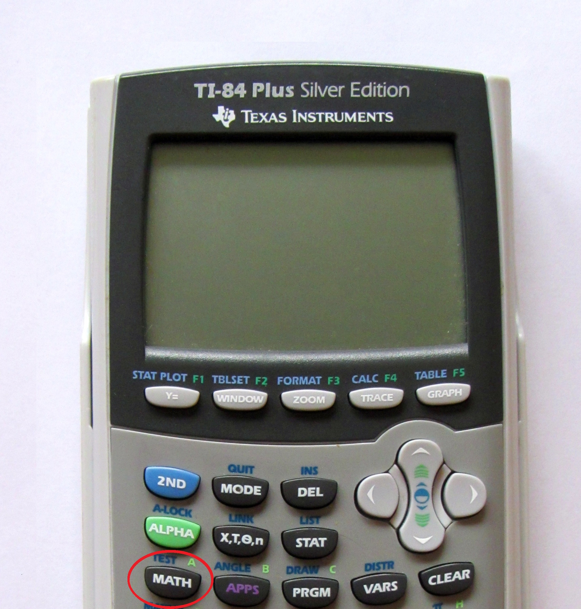
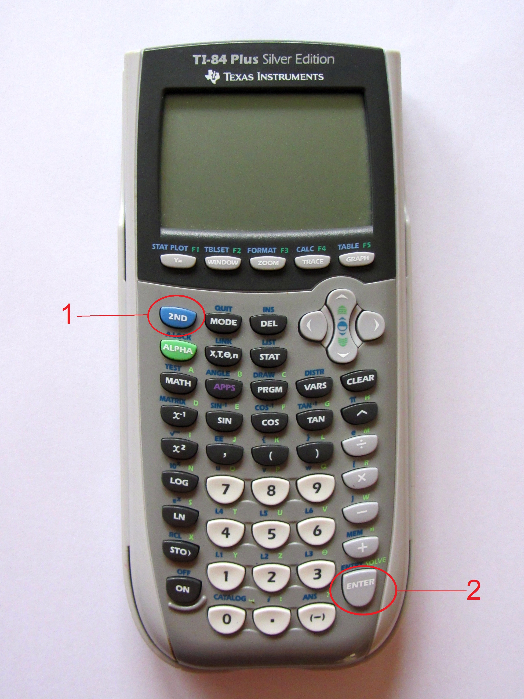
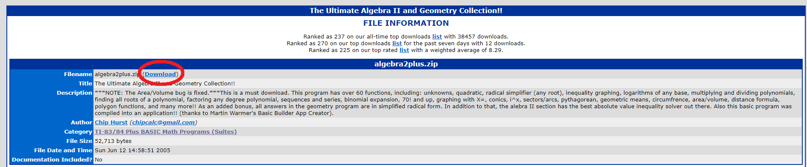

This article will teach you how to effectively use your calculator and also provides programs for the SAT, SAT Math I, and SAT Math II. If you’re not too familiar with your calculator then this article is perfect for you. The calculator is
100% optional though as all questions can be answered without one and I only recommend it as a way to do quick arithmetic. It’s good to be adept with a calculator but make sure you fully understand the concepts and don’t depend on it too
much.
DISCLAIMER: If you are using the programs then make sure you know how to use them properly before taking any test. You will find yourself fumbling about and confused if you have no idea
how the programs work.
A calculator isn’t as difficult to use as one might think. If you look at any key you will notice that on top of it it has blue and green text.
Example:y= has stat
plot in blue and f1 in green.
That means that if you press 2nd or alpha and then that button, you can access that command which
pertains to the color of 2nd/alpha.
Following our previous example, if you press 2nd and then y= then you can access stat
plots.
Tip 2: Use quit
Notice how when you use y= for plots you can’t get out using the clear button. Well, that’s what quit is for!
It’s the 2nd version of
mode and it’s located directly to the right of 2nd. You’ll generally be using quit to escape any programs or menus.

Tip 3: Use the math key
The math key is the holy grail of advanced techniques. Everything is included here. The first option, >Frac, turns a number into a fraction.
Example: 1.5 >Frac has an output of 3/2.
You
can also do the x root of something, factorials, LCM, GCD, and a lot more. Experiment with these options and you will be able to solve any math problem.

Tip 4: Retrieve your previous input
You can retrieve your previous input by using 2nd → enter.
Example: if your previous input was 3+8 then it will return 3+8.
You might use this if you want to
make small adjustments to that input.
Tip 5: Retrieve your previous output
You can retrieve the previous answer by using 2nd → (-).
Example:If your previous input was 3+8 then it will return 11.
You might use this if you want to have
the output only.
Tip 6: Graph effectively
The white buttons at the top of the calculator are used for graphing.
• y= allows you to enter a function. Use the X key under mode for the variable. You can also hide functions by pressing enter while highlighting the equals button. The equals button with
black highlighting means it’s shown while an equal sign without highlighting means it’s hidden. This will allow you to hide functions without having to get rid of the function itself.
• window allows you to set the borders of the graph
• zoom gives you default window options. Typically use ZStandard (Zoom → 6) so that it all fits. Use ZTrig (Zoom → 7) for anything involving trig
• trace lets you trace through the graph. Use the calc option (2nd → trace) to obtain useful information such as zeros, minimums, and what
value y will be with a specific x.
• graph lets you have a visual on the function. Use the table option (2nd → graph) to obtain a table of xs and ys. Press the + key to
input your x increment.
Create Your Own List of Formulas
Some of the programs include trig formulas but they may be clipped if you don’t have the exact model calculator that the programs were intended for. You may also want to create your own personal list of formulas that you don’t remember.
I’ll teach you my method here.
Basically we’re going to create a program but it’s not going to actually do anything; we will only use it as a text file. You’re going to want to go into programs (next to math) and go all the way to the
right to create a new program. You can use A-lock (2nd → alpha) so that every input will be the alpha version. This
will make it so that you can “type.” Type in your formulas and then use quit to leave. Any time you want to check up on your formula list, go back to programs and then go to EDIT. Select your program and you'll
be able to see your formulas.
Important Information Regarding Programs
SAT math isn’t that difficult to begin with. If you study properly and take a few practice tests then you will most likely not need these programs. Just regard these as backups. Most of these programs are from ticalc.org. The basic format will look like the image to the bottom. You can download the program by clicking on the bright blue download button. The file will be a ZIP folder and you’ll have to extract
it. The resulting folder from the extraction will be the one that contains the program. The process is shown in the "How to Download Programs" section. Also, most of these programs come with a ReadMe text file. READ
THEM. They provide documentation on how to use the programs.

How to Download Programs
If you’ve never downloaded any programs before, don’t worry! It’s pretty easy. This link is for the software used. This video I created gives you the
general gist of it all. I have also listed the steps below if you don’t want to watch the video.
1) Download this software which will allow you to transfer the programs you download on your computer to your calculator.
2) Use the charging cable to connect your computer to your calculator.
3) Download and the program and extract the folder if it’s in a ZIP folder
4) Drag and drop the program (has the same icon as the TI Connect CE Software) into the software
SAT Programs
This video teaches you how to make programs that will help you with the SAT. It includes programs for the quadratic formula, area of a triangle (Heron’s formula),
geometric/arithmetic/infinite series, and a few more.
SAT Math I Programs
This link provides you with two programs for the SAT Math I. There’s not much documentation for APrime, but it’s basically a program that spits out the prime numbers
between your two inputs. Keep pressing enter to obtain all the primes as it’s not an automatic process. Also, it doesn’t handle large gaps well like 1-100.
SAT Math II Programs
This is an application called Alegbra2Plus. Be warned, it is only compatible with TI-84/TI-84 Plus. It does not work with a TI-84 Plus CE. It’s an application so you
will access it by press the apps button to the right of the math button. You will be able to system of equations, conic sections, coordinate geometry, and a lot more as there are over 60 functions.
This program is called Cheater v3.0 and has an insane amount of stuff. The triangles section is especially useful as you can enter 3 unknowns and it will spit out the
rest of the missing information. This takes care of the law of sine and cosine. An important thing to note, if you’re using TI-84 Plus CE like I am, your graphing will be messed with a little. You’ll have to fix it by going into format (2nd → zoom) and turning Axes back on by changing the color (default is black). Also, any functions will be hidden so you will have to unhide them by pressing
y= and pressing enter while highlighting the equals sign.
This is the final program. It’s not as expansive as the other programs but it’s still good. This will mess up your graphing like Cheater v3.0 so scroll back up to
find directions on how to fix it.